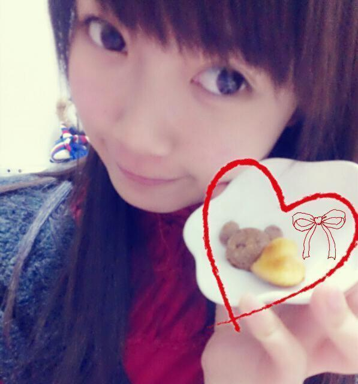
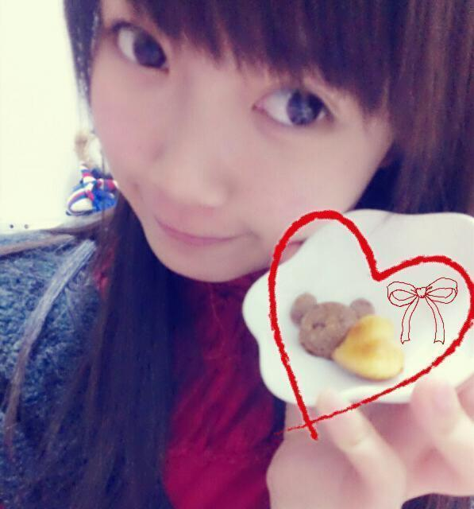
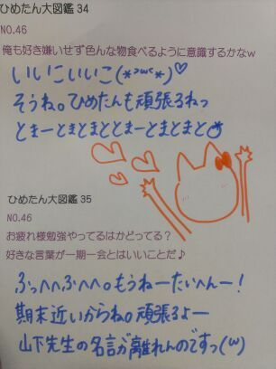

| 2013/02 12 Tue | ひめたん(*>ω<*)そ の261 |
てことで！
ちっちゃいパンケーキのレシピ
紹介するよー∩^ω^∩＊
バレンタインなに作るか決めてないーて
おにゃのこは是非参考にしてね♪
簡単だよーっ
材料(20っできるかもできんかもー)
ホットケーキミックス 50g
バター 30g
お砂糖 30g
卵 1っ
レモン汁 適量
茶色いやつは
+ココアパウダー適量！
作り方
バターを溶かす
材料全部混ぜる
型に流す
170℃のオーブンで約16~17分焼く
完成！
オーブンの温度と時間は
機種によって違うからきっと
まあちょうどいいとこ探ってね(*・v・)
とまあこんなにも簡単なんだけれども
ひめたんねーちょうどいい温度を見つけるのに
めちゃ時間かかりました←
焦げちゃったやつが山になってて
ままが困ってます(´;ω;`)
あ、話盛ってないからねこれ。がちよ。
完成イメージ！

てことでバレンタインじゃんよみなさん！
ねえーバレンタイン！
ねえーみなさんどうやって過ごすのさー？
ちっちゃいパンケーキのレシピ
紹介するよー∩^ω^∩＊
バレンタインなに作るか決めてないーて
おにゃのこは是非参考にしてね♪
簡単だよーっ
材料(20っできるかもできんかもー)
ホットケーキミックス 50g
バター 30g
お砂糖 30g
卵 1っ
レモン汁 適量
茶色いやつは
+ココアパウダー適量！
作り方
バターを溶かす
材料全部混ぜる
型に流す
170℃のオーブンで約16~17分焼く
完成！
オーブンの温度と時間は
機種によって違うからきっと
まあちょうどいいとこ探ってね(*・v・)
とまあこんなにも簡単なんだけれども
ひめたんねーちょうどいい温度を見つけるのに
めちゃ時間かかりました←
焦げちゃったやつが山になってて
ままが困ってます(´;ω;`)
あ、話盛ってないからねこれ。がちよ。
完成イメージ！

てことでバレンタインじゃんよみなさん！
ねえーバレンタイン！
ねえーみなさんどうやって過ごすのさー？

 自分の応援してる気持ちは届いてるかな？
自分の応援してる気持ちは届いてるかな？
ばしばし届いてます！
いつもありがとう。本当に感謝です。
これからも頑張るねっ＊
これからも親目線で
見守らせてもらってもいい？('-^*)
ぱぱまま！
あのね、ひめたんを娘のように
応援してくださる方って
握手会でも変に気負ったりしなくて
落ち着くんだよーほんとに♪
だから嬉しいよー＊
最近ひめたんビームで
ひめたんワールドに引き込まれてるんだけど
ひめたんより2個上の
高３のおばさんが推しても大丈夫？
おばさん違うよお姉さんだよー！
もちろんいいに決まってるし
むしろ光栄すぎてもうねーやばい嬉しい。
女の子に好かれるのもいいねー(ω)
あしゅ推しだけど、握手行ってもいい?
あしゅ (齋藤飛鳥chan)が
いいって言ったらいいよー
とかいいつつ、だめって言っても
あしゅに内緒で来て欲しいかなー(ω)
握手会の時何を話せばいいですか？
何でもいいのよほんとー
昨日の夜ごはんの話でも
最近見つけた素敵なカフェの話でも
なーんでもいーいーのーよー＼(^^)／♪
握手行ったら釣られそうになりました。
今度行ったらもっと釣ってくれますか？？
つ、つってるつもりはないよー///
つつつつーつつっつっつー
じゃあまた来てくれたら、その時は
ちょっと釣ってみましょう(｀・ω・´)
一回だけ、
個別に行った人とか覚えてる？www
覚えてると思うんだけど
万が一、万が一ひらめいてこなくても
怒らないでくーださいねっ♪
こないだ雪のときのにぎにぎ会で
リズリサの白いコート着て
ツインテールで行ったんだけど
わたしのこと覚えてるかな？（ ; ; ）
わかる、わかるよー！
だってめちゃアイドルだったもんー＊
にぎにぎ会(*´ω`*)かわいいねー
あんな寒い日にありがとうねっ
京都個別に行くので、
ぎゅっと握手しながらwww
すってきな笑顔で、
つってくれるかな？www
釣って、みせましょう素敵な笑顔で。
覚悟してなさい(^^)とかゆってー
心よりお待ちしております(^^)
スーツ姿で握手会に来る男子って
どう思いますか？
スーツ男子！いいですねー
ひめたんドキッとしますよー＊
普段あのースーツの方に会うこと
あんまないのでね。ええ(//ω//)
ひめたんうちわを持ってる人が多いけど
うちわのコメント、
何が書いてあったらうれしいですか？
ひめたん、大好き！
じゃ、ベタ過ぎるよね？？？
ベタ過ぎるとかないよ嬉しいよう(´pωq｀)
どんなでも嬉しいけど、
パッと見てすぐにひめきゅんさんって
わかるデザインが嬉しいかなー
うわーありがとうー///
今日は東スポさんの取材行ってきたよー
2/16発売なので、
よかったらみなさん見てねっ＼(^^)／

(＊´・ω・＊)
コメント(183)
2013/02/12 22:18